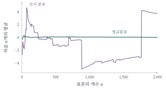

STEP III 1995, 문제 12
계속 읽기 전에 문제를 먼저 읽어 보자. 문제는 STEP Support Programme의 문제 데이터베이스에 있다: step.maths.org/questions/95-s3-q12
도입
측정을 여러 번 하고 평균을 내면 무작위 오차는 서로 상쇄되어, 평균은 참값으로 안정된다. 이 큰 수의 법칙(law of large numbers)은 모든 통계학의 토대이다. 그러나 여기에는 숨은 가정이 있다. 측정값의 평균(mean)이 유한해야 한다는 것이다. 이 문제는 서로 독립(independent)인 두 표준정규(standard normal) 확률변수의 비라는, 지극히 자연스러운 확률변수(random variable)를 만드는데, 이 확률변수는 평균이 아예 없다. 그 평균들은 결코 안정되지 않는다. 사실 이러한 확률변수 백만 개의 평균은 하나의 확률변수와 정확히 같은 분포(distribution)를 가진다.
이것이 코시 분포(Cauchy distribution)이다. 그 밀도(density)는 무해한 종 모양처럼 보이지만, 꼬리(tail)가 너무 두꺼워서 이따금 나타나는 엄청나게 큰 값이 어떤 평균이든 좌우해 버린다. 이 문제는 아름다운 기하학적 논증으로 이 분포를 찾아낸다. 좌표의 비는 직선의 기울기이고, 방사 대칭성 때문에 그 직선의 각은 균등분포를 따른다.
시작하기 전에
\((U, V)\)가 원점으로부터의 거리에만 의존하는 밀도를 가진 무작위 점이라면, 원점에서 그 점까지 이은 선분이 한 축과 이루는 각 \(\Theta\)에 대해 무엇을 말할 수 있는가?
평면을 회전해도 밀도는 변하지 않으므로, 모든 방향이 똑같이 일어날 법하다. 즉 각 \(\Theta\)는 \([0, 2\pi)\)에서 균등분포를 따른다. 그리고 \(\frac UV\)는 거리가 아니라 방향에만 의존한다.
차근차근 풀기
단계 1 결합 밀도
\(X\)와 \(Y\)가 독립이므로, 결합 밀도(joint density)는 각각의 밀도의 곱이다. \[\mathrm{f}(x, y) = \frac{1}{\sqrt{2\pi}}e^{-x^2/2}\cdot\frac{1}{\sqrt{2\pi}}e^{-y^2/2} = \frac{1}{2\pi}e^{-\frac12(x^2 + y^2)}.\] 이 밀도는 원점으로부터의 거리의 제곱인 \(x^2 + y^2\)를 통해서만 \(x\)와 \(y\)에 의존한다. 즉 원점을 중심으로 하는 원 위에서 밀도가 일정하다. 이것이 바로 “방사 대칭(radially symmetrical)”의 뜻이다.
단계 2 대칭성 이용하기
\(\frac UV < k\)는 \(V\)의 부호에 따라 두 가지 방식으로 일어난다. \(180^\circ\) 회전 \((u, v) \mapsto (-u, -v)\)에 의해 이 둘은 어떻게 연결되는가?
\(\frac UV < k\)는 \(V > 0\)이고 \(U < kV\)이거나, \(V < 0\)이고 \(U > kV\)라는 뜻이다. 회전 \((u, v) \mapsto (-u, -v)\)는 첫 번째 영역을 두 번째 영역으로 옮기고, 밀도를 보존한다. 따라서 두 영역의 확률은 같고, \[\mathrm{P}\Bigl(\frac UV < k\Bigr) = 2\mathrm{P}(U < kV, V > 0). \qed\]
단계 3 각
\(u\)를 가로축, \(v\)를 세로축으로 하는 평면에 영역 \(\{V > 0, U < kV\}\)를 그려 보자. 이것은 꼭짓점이 원점에 있는 쐐기 모양이다. 그 각은 얼마인가?
영역 \(V > 0\)은 위쪽 반평면이다. 원점을 지나는 직선 \(u = kv\)는 양의 \(v\)축과 \(\arctan k\)의 각을 이룬다(\(k > 0\)일 때 양의 \(u\) 쪽으로 기운다). 위쪽 반평면 중 이 직선의 왼쪽 부분은 각이 \(\frac\pi2 + \arctan k\)인 쐐기이다. 방사 대칭성에 의해 쐐기의 확률은 그 각을 \(2\pi\)로 나눈 값이므로, \[\mathrm{P}\Bigl(\frac UV < k\Bigr) = 2\cdot\frac{\frac\pi2 + \arctan k}{2\pi} = \frac12 + \frac1\pi\arctan k.\] 이를 \(k\)에 대해 미분하면 밀도 \[\mathrm{g}(k) = \frac{1}{\pi(1 + k^2)}. \qed\] 를 얻는다.
돌아보기
독립인 정규분포는 방사 대칭이다. 두 정규분포 밀도의 곱은 거리에만 의존한다.
비는 곧 방향이다. \(\frac UV\)는 점의 각에만 의존하며, 그 각은 균등분포를 따른다.
쐐기의 확률. 방사 대칭이 있으면 쐐기의 확률은 그 각에 비례한다.
숨은 수학
평균이 없다
코시 분포의 평균은 \(\int_{-\infty}^\infty\frac{k}{\pi(1 + k^2)}\,\mathrm{d}k\)여야 하겠지만, \(\int_0^K\frac{k}{1 + k^2}\,\mathrm{d}k = \frac12\ln(1 + K^2) \to \infty\)이다. 즉 이 적분은 수렴(converge)하지 않고, 평균은 존재하지 않는다. (대칭성 때문에 답이 \(0\)일 것 같지만, 양의 부분과 음의 부분이 모두 무한대이고 \(\infty - \infty\)는 값을 갖지 않는다.) 분산(variance)도 무한대이다.
더 나쁜 것은, 독립인 코시 확률변수 \(n\)개의 평균이 다시 정확히 같은 분포의 코시 분포를 따른다는 점이다. (이를 확인하는 한 가지 방법은 특성함수(characteristic function) \(\mathrm{E}(e^{itX}) = e^{-|t|}\)를 이용하는 것이다.) 따라서 평균을 내는 것은 전혀 도움이 되지 않는다. 백만 번 측정한 값의 평균이 한 번 측정한 값보다 조금도 더 믿을 만하지 않다. 그림 12.22.1는 무슨 일이 일어나는지 보여 준다. 정규분포 표본의 누적 평균(running average)은 안정되지만, 코시 분포 표본의 누적 평균은 이따금 나타나는 거대한 값에 흔들리며 끝없이 요동친다.

코시 확률변수는 어디에서 나오는가
균등하게 무작위인 방향을 향하도록 손전등을 벽에 비추면, 벽에 생기는 빛점의 위치는 코시 분포를 따른다. 물리학에서는 같은 밀도를 로렌츠 분포(Lorentzian)라고 부르며, 스펙트럼선과 공명 봉우리의 모양을 기술한다(11.1 절와 비교해 보라). 금융에서는 정규분포 모형이 크게 과소평가하는 이따금의 폭락을 모형화하기 위해 코시 분포처럼 꼬리가 두꺼운(heavy-tailed) 분포를 사용한다. 통계학에 주는 교훈은 심각하다. 평균과 분산에 기반한 방법은 꼬리가 두꺼운 자료에서는 실패하며, 중앙값(median)을 사용하는 것과 같은 로버스트한(robust) 방법이 필요하다(코시 분포에서도 중앙값은 완벽하게 잘 정의되고 잘 작동한다).
이 분포는 1824년 시메옹 드니 푸아송(Siméon Denis Poisson)이 연구했는데, 그는 이 분포가 큰 수의 법칙을 위반한다는 것을 알아차렸다. 오귀스탱루이 코시(Augustin-Louis Cauchy)는 1853년 최소제곱법(method of least squares)을 둘러싸고 Irénée-Jules Bienaymé와 공개 논쟁을 벌이던 중 이 분포를 만났다. 코시는 오차의 꼬리가 두꺼울 때 최소제곱법이 형편없는 방법일 수 있음을 보이는 데 이 분포를 사용했다. 이름은 코시에게 붙었는데, 이는 Stephen Stigler가 “스티글러의 명명 법칙(Stigler’s law of eponymy)”이라고 부른 것의 한 예이다. 어떤 과학적 발견도 최초 발견자의 이름을 따서 불리지 않는다는 법칙이다.
사고 기술
평균이나 분산을 사용하기 전에, 그것을 정의하는 적분이 수렴하는지 확인하라. 대칭성이 발산하는 적분을 \(0\)으로 만들어 주지는 않는다.
대학에서는 적분 가능성(integrability) 조건이 확률론의 모든 정리에 포함된다. 큰 수의 법칙에는 유한한 평균이, 중심극한정리(central limit theorem, 12.24 절)에는 유한한 분산이 필요하다. 코시 분포는 이러한 조건이 성립하지 않을 때의 표준적인 반례(counterexample)이다.
더 도전하기
손전등. 길고 곧은 벽에서 거리 \(1\)만큼 떨어진 손전등이 벽의 수선과 각 \(\Theta\)를 이루는 방향을 가리킨다. 여기서 \(\Theta\)는 \((-\frac\pi2, \frac\pi2)\)에서 균등분포를 따른다. 빛점의 위치 \(\tan\Theta\)가 코시 분포를 따름을 보여라.
역수. \(C\)가 코시 분포를 따르면 \(\frac1C\)도 코시 분포를 따름을 보여라. (힌트: \(\frac UV\)와 \(\frac VU\).)
중앙값은 잘 작동한다. 코시 분포의 중앙값이 \(0\)이고 사분위수(quartile)가 \(\pm1\)임을 보여라.
반지름과 각. \(X\), \(Y\)가 독립인 표준정규 확률변수일 때, 극좌표(polar coordinates)로 바꾸어 \(R^2 = X^2 + Y^2\)가 평균이 \(2\)인 지수분포(exponential distribution)를 따르고 각과 독립임을 보여라. (이것이 정규분포 난수를 생성하는 Box–Muller 방법의 기초이다.)
더 읽을거리
Geoffrey Grimmett & Dominic Welsh, Probability: An Introduction (Oxford University Press). 확률변수의 변환을 다룬다.
Nassim Nicholas Taleb, The Black Swan (Penguin). 일반 독자를 위해 두꺼운 꼬리와 그것이 왜 중요한지를 설명한다.
Stephen Stigler, The History of Statistics (Harvard University Press). 코시와 Bienaymé의 논쟁을 담고 있다.